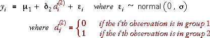
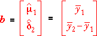

Applying the GLM theory
We showed on the previous page that the model of a normal distribution in each of two groups with the same standard deviation, σ, but possibly different group means can be expressed as a single GLM for all observations,

Standard GLM theory can therefore be used to find the least squares estimates of the model parameters,

Expanding this matrix equation using the design matrix, X, from the previous page, it can be shown that the least squares estimates are:

Using these estimates to find fitted values for the observations, it is simple to show that:
The fitted values are the sample means from the two groups.
Using a GLM with an indicator variable therefore gives identical estimates of the mean response in the groups as does a conventional 2-sample analysis.
Anticipation of hypnosis
In a study of the effect of hypnosis, 16 subjects were divided at random into a group of 8 to be hypnotised and 8 controls. A measure of ventilation (breathing) was taken from each subject at the start of the experiment.
We have initially chosen the Control group as the baseline. The parameter µ1 denotes the mean ventilation in that group. The other parameter, δ2, denotes the difference between the mean binding ventilation rate for the and Pre-hypnosis group and the Control group.
This model allows the two group means can be set to arbitrary values. Drag the two red arrows to observe this.
Click Least squares to set the parameters to their least squares estimates. The fitted values are now all equal to their group mean.
Either group could have been used as the baseline group. Finally, use the pop-up menu to change the baseline group to the Pre-hypnosis group. Observe that although the values of the parameters change, the fitted values from the model remain the same.